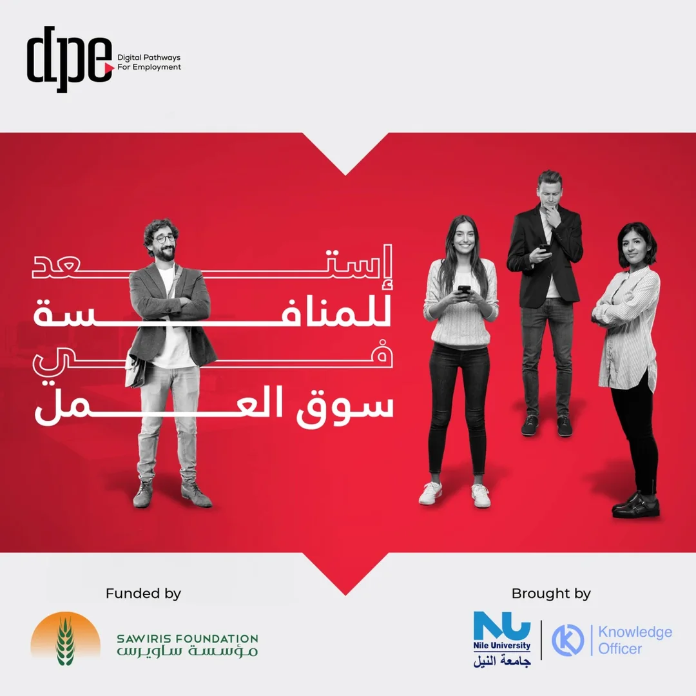
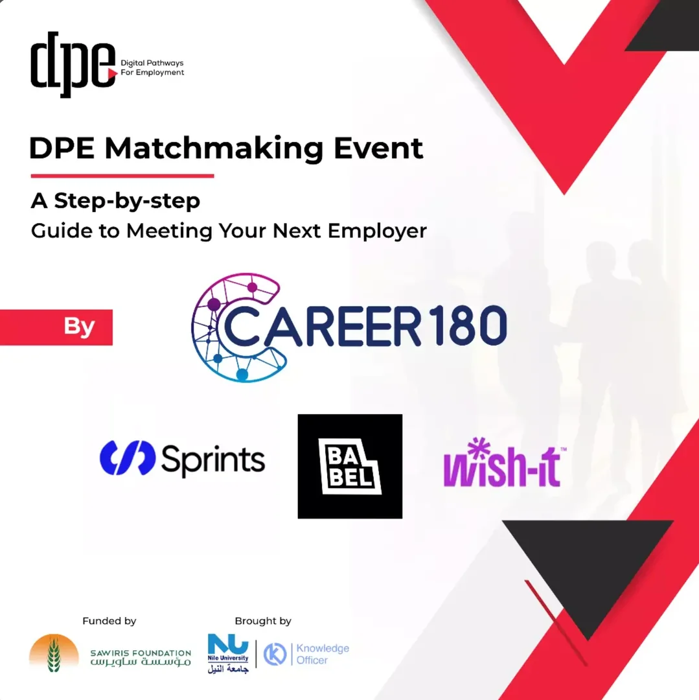
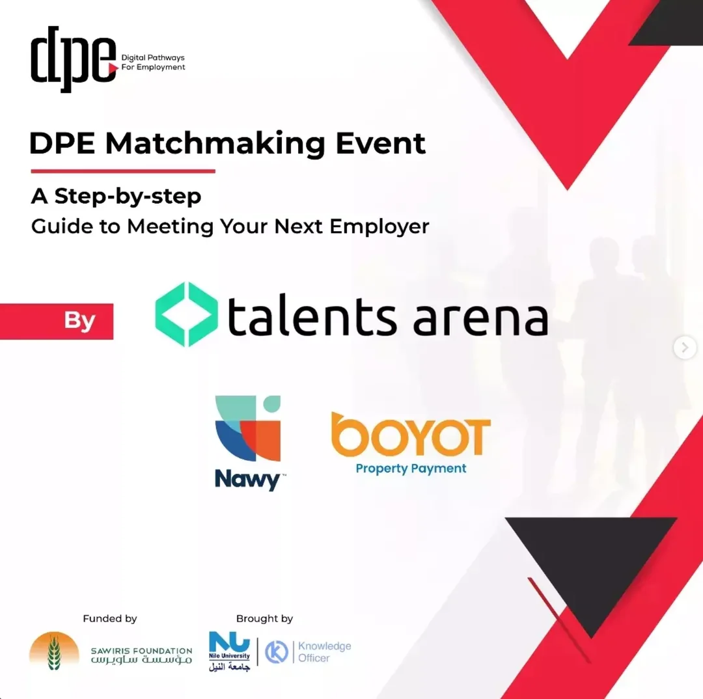
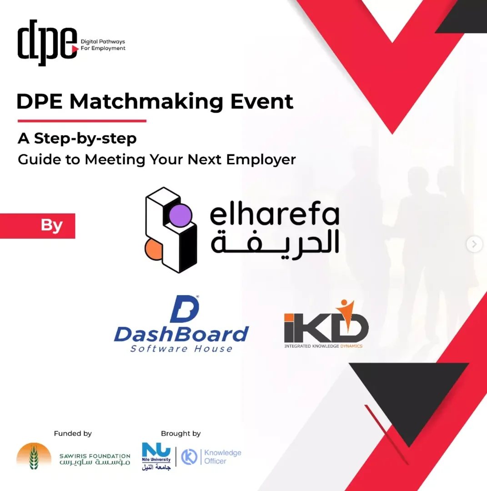
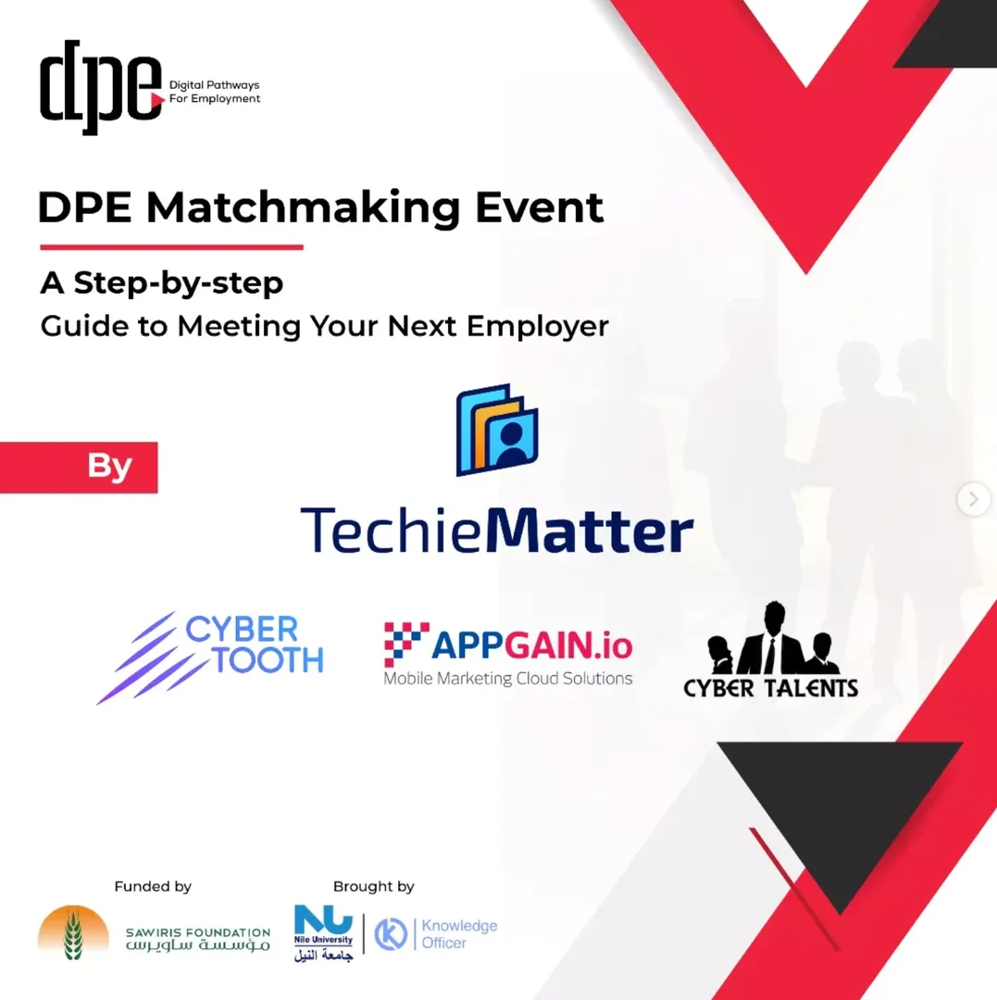
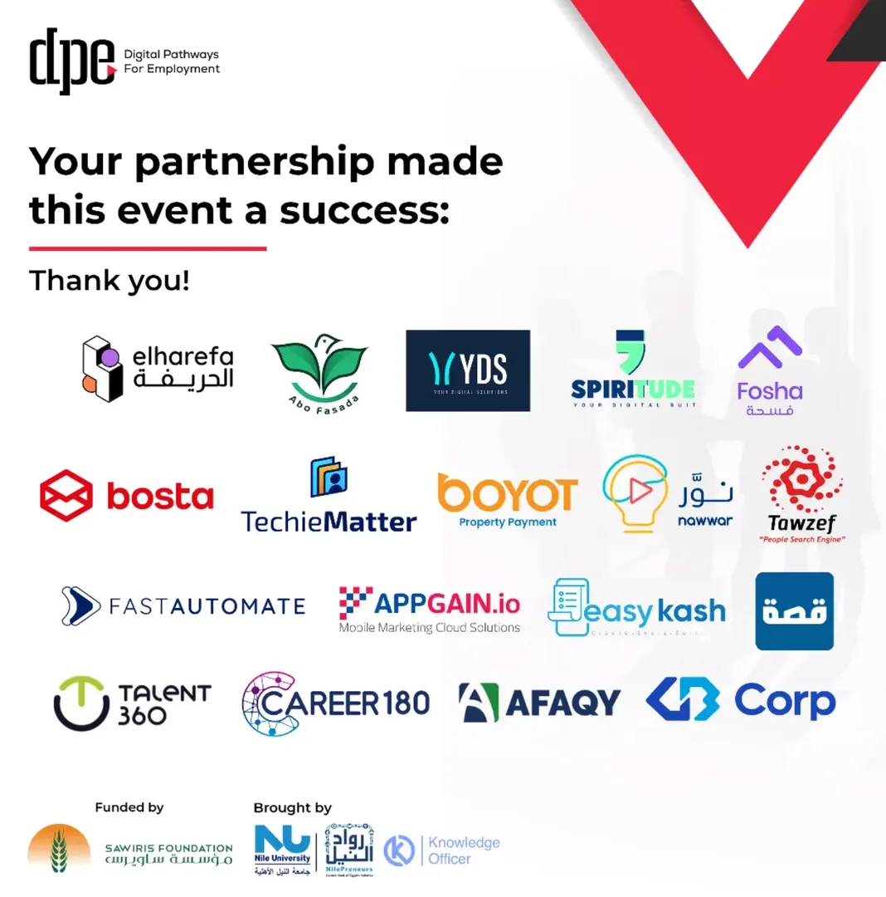
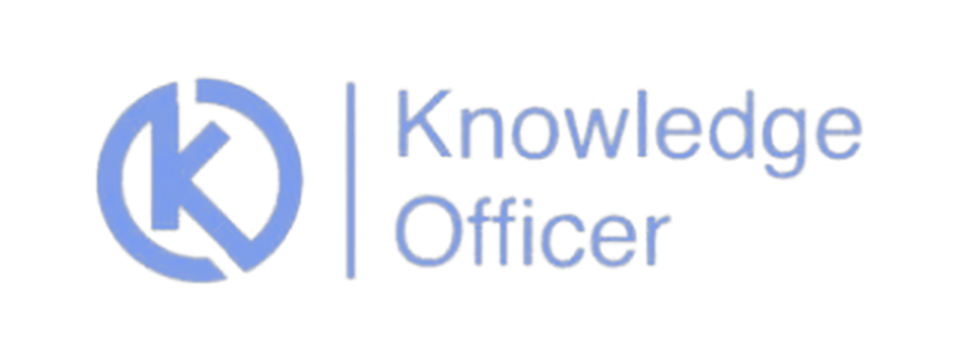

Sawiris Foundation · Nile University · Knowledge Officer · 2022–2023
Digital Pathways for Employment
DPE, a fully funded employability program that trains young Egyptian graduates for in-demand digital careers and connects them directly with employers. I took it from the first concept note to a funded program.
 Brought by
Brought by
The program film
Inside DPE
The program’s launch film, in Arabic: a path for graduates who want to change careers and learn new skills, the tracks on offer, and the partners behind it.
At a glance
The objective
Close the gap between what Egyptian graduates learn and what the digital job market hires for: equip young graduates with in-demand digital skills, then connect them directly with employers ready to hire.
My role
I was involved from the very first page. I crafted the concept note developed between Nile University and Knowledge Officer, presented it to the Sawiris Foundation, designed the program and its budget breakdown, and carried it through to the grant that funded its implementation.
End to end
From concept note to funded program
- 01
Concept note
The problem, the target graduates and the employment outcome, developed between Nile University and Knowledge Officer.
- 02
Funder pitch
The concept presented to the Sawiris Foundation for Social Development.
- 03
Program design
Six career tracks over two cycles, eligibility, fair selection, training and employer matchmaking.
- 04
Budget breakdown
Every component costed, from training delivery to outreach and employer events.
- 05
Funding secured
A 4M EGP grant to implement the program, delivered with Nile University and Knowledge Officer.
The learning path
Six tracks, two cycles
The first cycle ran the three tech tracks, the second the three business tracks. Each track ran for three months, taught in Arabic and English by practitioners from the industry, and ended with a graduation project and an employer matchmaking event.
How the program was built
Six design choices that kept the program free, fair and focused on jobs.
The campaign
Ready to compete in the job market
An Arabic-first campaign on Instagram and Facebook introduced each track, its trainers and who could apply, and drove graduates to apply online, cycle after cycle.

Employer matchmaking
Online hiring eventsUX/UI Design graduates · December 2022
Five days online, 11–15 December, each led by a recruitment partner (Career180, Talents Arena, Elharefa, TechieMatter and Hired) bringing companies with open roles, among them Sprints, Babel, Wish-it, Nawy, Boyot, Dashboard, IKD, Appgain, CyberTalents and CyberTooth.
Front-End and Sales graduates · May 2023
Three days online, 24, 25 and 28 May, with partners and employers including Elharefa, Spiritude, YDS, Fosha, bosta, TechieMatter, Boyot, FastAutomate, Appgain, nawwar, easykash, Career180, Qessa and GB Auto.





Results
Partners



Let's shape
what comes next.
Begin with a 30-minute discovery conversation, or share the brief for your next initiative.